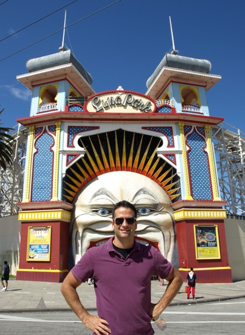

Of Travels and Trivializations
travel.BrianHJaffe.com - a personal adventure blog
Site Navigation
[Skip]
Current Entry
Previous Entries
New and Old
Real and Fake
The Unexpected Gifts of Travel
A Crossing of the Mind
The Perfect Destination
An Adventure's End
The Greatest Purchase I Have Ever Made
Dear India
The Speed of Stop
The Privilege That Is Mine
The Half Way
Pros and Amateurs
Small Victories
There's a Reason Most People Don't Do This
Roads (The Great Democratizer)
Glitz and Glamour
The Darkest Dark and the Lightest Light: Part II
The Darkest Dark and the Lightest Light: Part I
The Trail Less Traveled
Travel Time Out
Cotopaxi
Hostels
Saying Goodbye
Gringos
Fiestas de Cuenca
PumaNegra and My First Real Ride
Team Swiss
Crazy Idea Number 1: Buying a Motorcycle
48 Hours in Cuenca
Home No More
A Wide World Awaits
About Me
Photo Album
New Photos
Australia
India
Dubai
South America
Old Header Photos
Videos
Previous
Next
List

Lane in Melbourne, Australia
bhjaffe@gmail.com
@BrianHJaffe © Brian H. Jaffe 2012
[Back To Top]